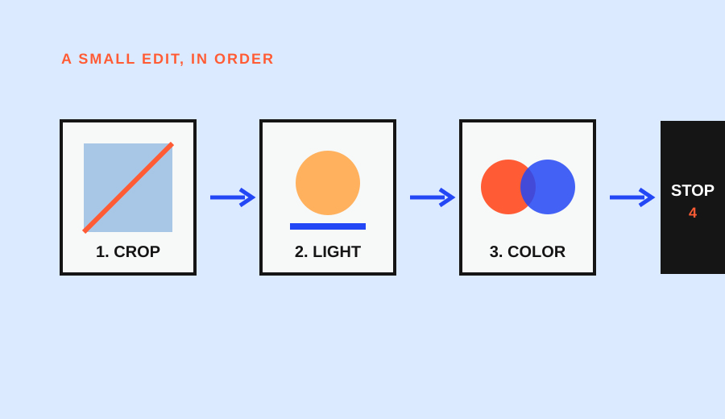

Choose JPEG when you need a small, ready-to-share file and expect little editing. Choose RAW when you plan to process the image and want more room to adjust white balance, highlights, shadows, and color. Choose RAW+JPEG only when the immediate JPEG is useful enough to justify storing two files. The right answer is a workflow decision, not a badge of seriousness.
The short decision matrix
| Your priority | Better starting format | Why |
|---|---|---|
| Send or post images quickly | JPEG | The camera has already processed the image, and the file is widely supported. |
| Correct exposure or white balance later | RAW | More tonal and color data gives compatible software more processing flexibility. |
| Keep an immediate preview and an editable original | RAW+JPEG | You get both versions, but each shot uses more storage and creates a sorting task. |
| Avoid a computer or editing app for now | JPEG | It is simpler to open, transfer, and share. |
| Build an editing habit and preserve options | RAW | The original file remains available while you export copies for delivery. |
This table assumes that the camera can record the format and that your chosen software can open it. Check the device and app documentation before changing a large archive.
What the camera has already decided in a JPEG
A JPEG is not an untouched sensor record. As Adobe explains, the camera processes the captured data and applies decisions such as brightness, contrast, color saturation, and sharpening before saving the compressed file. That processing is useful: the result is normally quick to preview and easy to send.
The trade-off is that compression discards some tonal and color information. You can still crop, adjust brightness, or change color in an editor, but there is less original data available when a correction is extreme. A JPEG is therefore a finished starting point, not a defective RAW file.
JPEG is a sensible choice for a family event, a classroom exercise, or a phone-to-message workflow when the main requirement is seeing and sharing the picture quickly. It also reduces the storage and transfer burden when many images are being made.
What a RAW file keeps available
RAW files preserve more of the information recorded by the camera sensor and leave the development decisions to compatible software. Adobe describes the practical advantage as greater flexibility with white balance and exposure corrections, including some highlight and shadow recovery when detail remains in the file. The result is not magic: a clipped highlight or a blurred subject cannot always be reconstructed, and the amount of recoverable information depends on the camera and the exposure.
RAW also changes the time of the decision. Instead of accepting the camera's sharpening, contrast, and color interpretation at capture, you can choose those settings during processing. That is useful when a scene needs a deliberate look or when lighting makes the first exposure less than ideal.
Sony's support documentation treats RAW as a camera file format that may require compatible software, and Adobe notes that RAW normally needs to be processed and converted before it is convenient to share. In practice, a RAW file is an editable source; a JPEG export is usually the delivery copy.
The costs are part of the format choice
RAW is larger. Adobe's comparison guidance describes RAW files as significantly bigger than JPEG files and notes that a RAW file can be roughly two to six times the size of a JPEG, depending on the camera and settings. Larger files use more card, disk, and backup space. They also take longer to copy and can make a two-version archive harder to search.
RAW also depends on a compatible workflow. A current editing application may read the camera's format, but an older app, a browser, or a recipient's phone may not. The safe handoff is to keep the RAW as the original and export a JPEG or another requested format for viewing.
JPEG has a different cost: it is efficient now but gives you less room later. Heavy changes to exposure, white balance, or color can reveal compression and limited tonal data sooner than they would in a RAW workflow.
The app caveat is part of the choice
Do not change the setting during an important assignment until you have confirmed the whole path: capture, import, edit, backup, and export. A camera may record a proprietary RAW variant that one application reads while another application shows only its JPEG pair. A phone may display both files but offer RAW editing only through a selected editor. Google Photos, for example, documents a RAW badge and a separate RAW tile for supported Pixel RAW+JPEG captures, with editing delegated to a chosen RAW editor. That is a device-specific workflow, not a promise about every phone or camera.
Make a small test folder before committing to RAW. Copy one RAW file, open it in the software you intend to use, make a minor adjustment, export a JPEG, and reopen the export on the device or service where it will be shared. If any step fails, keep JPEG for that use or choose a different supported application. The test costs less than discovering after a trip that the original files cannot be processed where you are.
Compare two real beginner workflows
Workflow A: capture, select, share
You photograph a short event and want to send a few good frames the same day. JPEG keeps the process small: copy the files, select the keepers, make modest adjustments if needed, and share them. You do not need to preserve a large editable source for every frame unless the images have later value.
Before choosing JPEG, check the camera's picture profile and white-balance behavior. Those choices influence the look that gets baked into the file. If the scene has difficult mixed light or high contrast, make a test frame and inspect the detail you care about.
Workflow B: capture, edit, export
You are practicing exposure and want to compare several interpretations of the same scene. RAW lets you keep the original while exporting a JPEG for a message, portfolio draft, or web upload. The workflow requires an editing application, a folder structure, and a backup plan, but it makes the learning loop visible: capture, process, export, and compare.
Do not erase the RAW simply because the first export looks good. If the image matters, preserve the original and label the exported version so you know which file is the delivery copy.
Where RAW+JPEG helps—and where it creates friction
RAW+JPEG records both formats at capture. This can be practical when a client, teammate, or family member needs a quick preview while you want an editable original. It can also be a gentle transition for a beginner who is learning an editor without giving up immediate sharing.
The price is duplication. One shutter press creates two files, so storage, backup, import, and deletion decisions happen twice. If you routinely ignore one of the pair, the setting may be adding work without adding value. Use it for a defined handoff need rather than as a permanent “best of both worlds” default.
A format decision you can revisit
Start with the smallest workflow that protects your purpose. If the picture is disposable and speed matters, JPEG is enough. If the picture is important and you expect to correct or reinterpret it, RAW is the safer source. If another person needs a ready preview while you continue editing, RAW+JPEG can make sense for that assignment.
The decision is reversible for future captures. Review one ordinary week of photographs: how often did you edit beyond a small crop and brightness change, how often did you need to share immediately, and how often did storage or software get in the way? Let those observations choose the next setting.
Research sources
Sources
- When to use raw vs. JPEG — Adobe Learn
- JPEG vs. RAW — Adobe Creative Cloud
- What is a RAW image file and how much memory does it require? — Sony Support
- Edit a photo or video on your Pixel phone or tablet — Google Photos Help